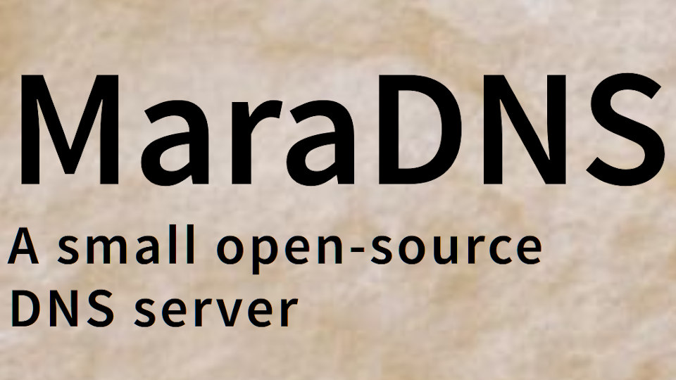

I have received 12 AI assisted security advisories; of those advisories, only one was serious enough to merit a patch being made. Another one, which yes I patched against, was with code which hasn’t been able to even compile since 2022.
The problem with AI-assisted reviews is that people are finding a large number of issues which aren’t actual security issues.
With one issue, when I asked for an exploit or a patch, they ignored me. It didn’t look like a real issue.
I got some eight different reports from another person including one claimed “packet of death”. I spent a day investigating the “packet of death” claim, and it was a false alarm. The issues they found were things like “if Deadwood gets this weird packet, it takes Deadwood a couple of seconds to release the resource used by the recursive query being processed”. So, nothing serious and nothing that merits a patch.
Another person sent a fairly large merge request, claiming buffer
overflows in a couple of utilities that do not even compile by default.
I looked at the issues and verified that I did proper bounds checking
except in one case there is a program—which I wrote about 20 years ago
and which hasn’t even been able to compile since 2022—with a
buffer overflow, but only if one’s $HOME (home directory)
is over 50 characters in length—a very unusual circumstance. I will
detail this fix below.
Haruki Oyama, on the other hand, did find a legitimate security hole which merited a new MaraDNS release with the DNS-over-TCP code in Deadwood.
If DNS-over-TCP was enabled (it is disabled by default), a Deadwood client authorized to perform DNS queries could cause the DNS-over-TCP service to not function with a denial of service attack.
This bug does not affect DNS-over-UDP operation.
If tcp_listen is not in your dwood3rc file,
this bug does not affect you. If tcp_listen is in
your dwood3rc file but has the value 0, this bug still
does not affect you. Only people who have set tcp_listen
to have a value of 1 are affected.
Note that no example dwood3rc file has tcp_listen
set to 1.
Only clients authorized to perform DNS queries can exploit this bug.
mqhash is a program I wrote in 2005 or 2006, and which I
stopped using once I moved from using AES for cryptographically strong
random numbers over to RadioGatún[32]. Indeed, the program stopped
being able to compile in 2022.
However, since it uses strcat(), a static code analysis
revealed that this unused code had a very hard to exploit buffer
overflow:
mqhash is not compiled by default when compiling
MaraDNS, Deadwood, and coLunacyDNS. One would have to go to the
directory mqhash is in to compile it.
mqhash had to be patched before the program would even
compile; I didn’t even realize it stopped compiling until this issue
was brought up.
Once mqhash was patched, one would need to have
$HOME (one’s home directory) be over 50 characters in length.
$HOME is normally 6 + size of username characters in
length (/), and usernames are generally 8
characters or shorter, so in the real world, $HOME should
be 14 characters or less, but needs to be 50 characters or longer for
the exploit to work.
To address this issue:
I patched against the buffer overflow.
I updated mqhash so it would compile again
I updated the relevant Makefile so mqhash
won’t compile with the default all target.
I have released MaraDNS 3.5.0037 with these issues patched.
People may observe I have moved MaraDNS from my personal domain to GitHub. While I have no plans to shut down my personal domain at this time, having it on GitHub means that MaraDNS’s webpage will stay online and not need to be accessed by using a web archive when and if my personal domains ever go down.
Just as I have fixed Y2038 issues in 2022, as well as moving from Perl to Lua 5.1 (which is included with MaraDNS as a security hardened fork called “Lunacy”) for the scripts which make MaraDNS’s documentation, I am now moving to a website which should stay online for the foreseeable future.
In addition, it would seem I have lost my GPG signing key for MaraDNS. For people who need a GPG signed copy of MaraDNS, download MaraDNS 3.5.0036 and apply any security patches by hand.
MaraDNS can be downloaded from my personal domain as well as from Sourceforge. It’s also available on multiple public Git repos.